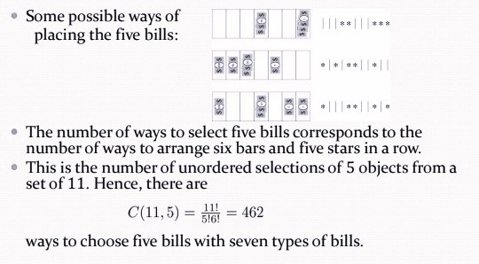

Ⅵ Counting
6.1 The Basics of Counting
略
6.2 The Pigeonhole Principle
The Pigeonhole Principle（鸽巢原理）
If $k$ is a positive integer and $k+1$ objects are placed into $k$ boxes, then at least one box contains two or more objects.
Example:
Show that for every integer $n$ there is a multiple of $n$ that has only $0$s and $1$s in its decimal expansion.
Let $n$ be a positive integer.
Consider the $n+1$ integers $1$, $11$, $111$, $···$, $11···1$(where the last has $n+1$ $1$s).
There are $n$ possible remainders when an integer is divided by $n$.
By the pigeonhole principle, when each of the $n+1$ integers is divided by $n$, at least two must have the same remainder.
Subtract the smaller from the larger and the result is a multiple of $n$ that has only $0$s and $1$s in its decimal expansion.
The Generalized Pigeonhole Principle
If $N$ objects are placed into $k$ boxes, then there is at least one box containing at least $\lceil\frac{N}{k}\rceil$ objects.
Example:
During $30$ days a baseball team plays at least one game a day, but no more than $45$ games; show that there must be a period of some number of consecutive days during which the team must play exactly $14$ games.
$a_j$: the number of games played on j-th day
$b_j=\sum\limits_{i=1}^ja_i$, $b_1,b_2 ,...b_{30}$ are strictly increasing number.
$c_j= b_j+14$, then $15\leqslant c_j\leqslant 45+14=59$, the $60$ integer numbers $b_1,b_2 ,···,b_{30} , c_1,c_2 ,···,c_{30}$ are all less than or equal to $59$, then two of these integers are equal
hence $b_i = c_j=b_j+14$,it implies $a_{j+1} + a_{j+2} +··· +a_i=14$
Ramsey Number
The Ramsey number $R(m,n)$ is the smallest number of people at a party that there either $m$ mutual friends or $n$ mutual enemies. (two men should be either friends or enemies)
6.3 Permutations and Combinations
略
6.4 Binomial Coefficients and Identities
Pascal's Identity
$C_n^{k-1}+C_n^k=C_{n+1}^k$
Vandermonde's Identities
$C_{m+n}^r=\sum\limits_{k=0}^rC_m^{r-k}C_n^k$
Corollary 1
$C_{2n}^n=\sum\limits_{k=0}^n(C_n^k)^2$
Corollary 2
$C_{n+1}^{r+1}=\sum\limits_{j=r}^nC_j^r$
6.5 Generalized Permutations and Combinations


6.6 Generating Permutations and Combinations
略